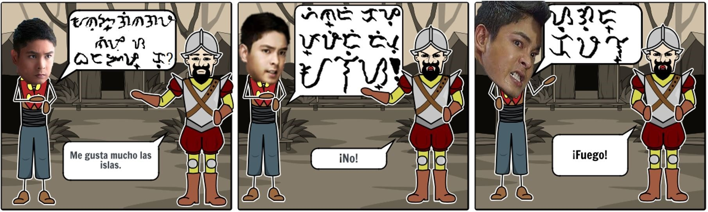

May isang maharlikang nagngangalang Datu Kardo. Palaban at mabangis siya ngunit isang araw...  Ang Batas Komonwelt Blg 570 ang kumilala sa Filipino bilang ang Wikang Pambansa. Maprotektahan kaya ito nila Kardo?